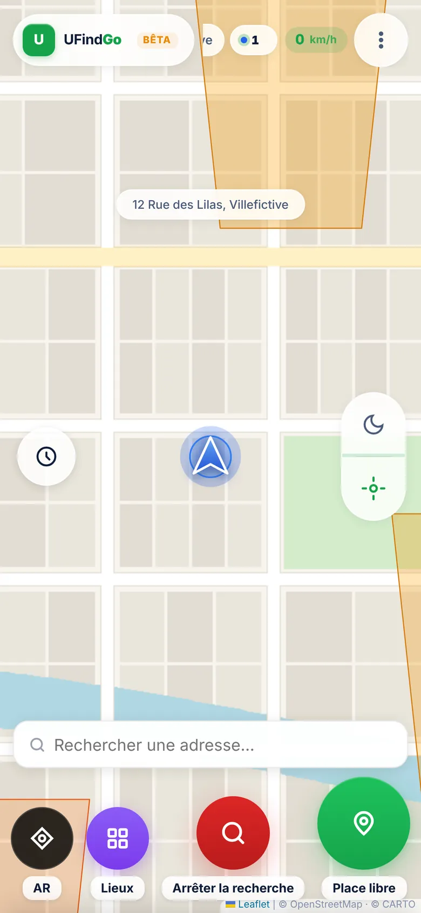
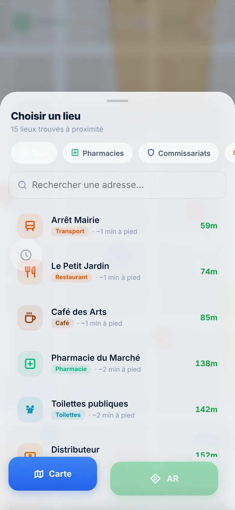
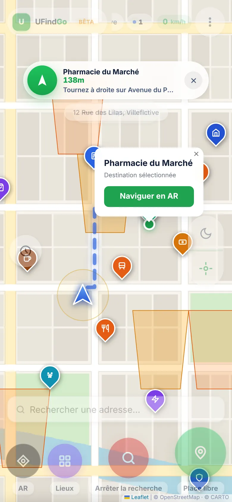
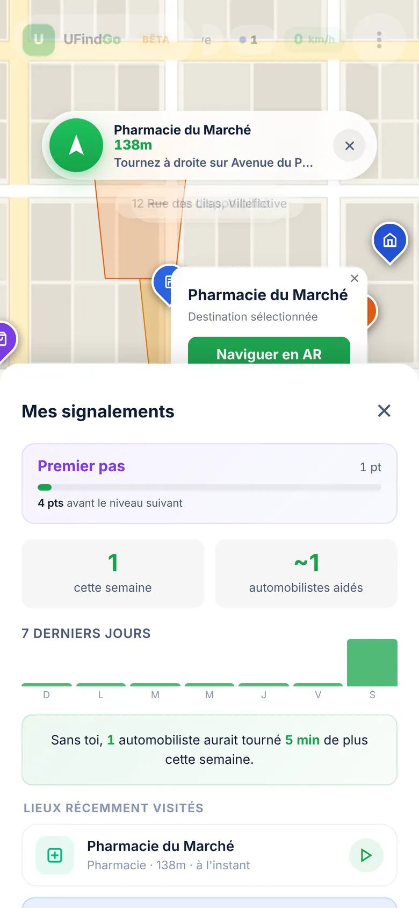
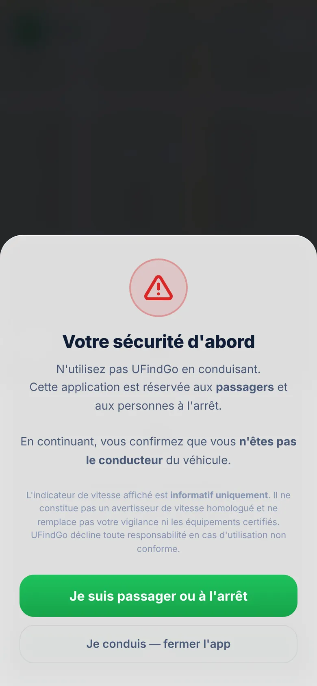
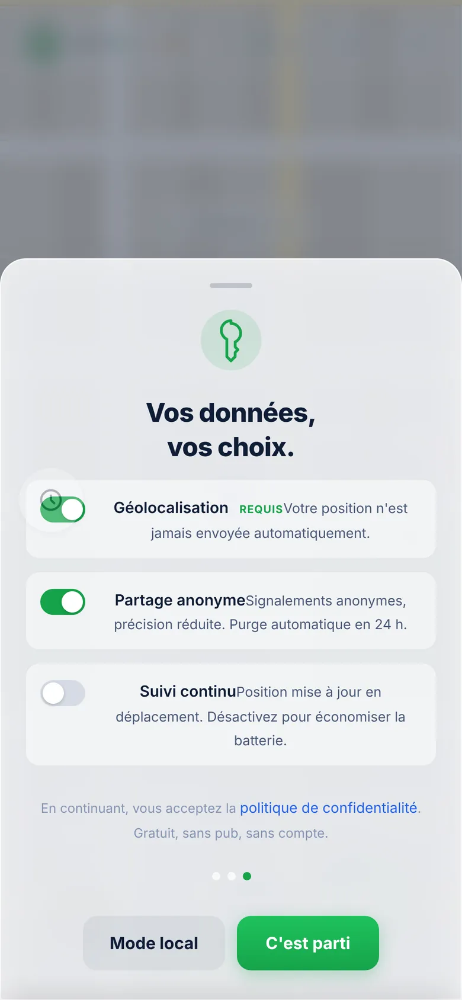

Carte collaborative · temps réel · bêta
UFindGo
Trouvez une place. Aidez les autres. Chacun signale les places libres qu'il voit, tout le monde en profite.

Une place se libère à deux rues d'ici, et personne ne le sait. UFindGo fait de chaque passant un éclaireur : celui qui voit une place libre la signale d'un geste, et elle s'allume sur la carte de tous ceux qui cherchent autour.
Le geste
Un appui.
Une place partagée.
- 1Vous voyez une place libre
Vous la quittez, ou vous en apercevez une en passant. Un appui sur le bouton vert suffit.
- 2La zone s'allume
Le quartier de la place s'illumine sur la carte. Seule une position arrondie est partagée, sans aucun nom.
- 3Les autres la voient
Ceux qui cherchent autour la voient apparaître en temps réel et peuvent s'y faire guider. Le signalement reste affiché cinq minutes.
Autour de vous
Plus qu'une place.
Tout ce qui compte, à côté.
Pharmacie, distributeur, toilettes, borne de recharge : UFindGo liste les lieux utiles à proximité, avec la distance à pied, et trace l'itinéraire en un geste.



Réalité augmentée
Levez le téléphone.
La rue vous répond.
La caméra filme la rue, et UFindGo y superpose les places signalées et les lieux choisis, avec leur distance et la direction à prendre.
- Guidage vocal : « tournez à droite », « tout droit »
- L'écran reste allumé pendant le guidage
- Retour à la carte d'un seul geste

Sécurité
Jamais
au volant.
UFindGo est réservé aux passagers et aux personnes à l'arrêt. L'application le rappelle dès l'ouverture, et elle veille ensuite.
Avant toute chose, l'utilisateur confirme qu'il n'est pas le conducteur.
Si la vitesse laisse penser que l'utilisateur conduit, UFindGo l'interrompt et propose de se mettre en pause.
Le compteur affiché n'est pas un avertisseur homologué et ne remplace ni la vigilance ni les équipements certifiés.
Vos données
Anonyme. Approximatif.
Éphémère.
Un signalement dit seulement « une place est libre par ici ». Il ne dit pas qui l'a vue.
- Un identifiant tiré au hasard, sans lien avec votre identité
- Votre position n'est partagée avec les autres qu'au moment où vous signalez
- La photo de profil reste sur votre téléphone
- Un mode local, sans aucun partage
- Un bouton pour effacer toutes vos données
- Aucun compte, aucune publicité, aucun traceur
Les signalements partagés transitent par Google Firebase, le service qui les distribue en temps réel. Pour afficher l'adresse, les lieux proches et les itinéraires, l'application interroge les services ouverts d'OpenStreetMap avec votre position.

En chiffres
Les règles de la route.
À vous de jouer
La prochaine place
est peut-être la vôtre.
UFindGo s'ouvre dans le navigateur du téléphone. Aucune installation, aucun compte : la carte est prête.
Version bêta : en développement actif, comportement susceptible d'évoluer